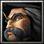
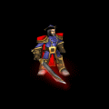

<!DOCTYPE html>
<html>
<head>
    <meta charset="utf-8">
    <meta name="viewport" content="width=device-width, initial-scale=1, maximum-scale=1">
    <title>Hero Str</title>
    <link rel="stylesheet" type="text/css" href="../../../../bower_components/prism/themes/prism.css">
    <link rel="stylesheet" type="text/css" href="../../../../bower_components/todc-bootstrap-main/dist/css/bootstrap.min.css">
    <link rel="stylesheet" type="text/css" href="../../../../styles/main-presentation.css">
    <link rel="stylesheet" type="text/css" href="../../../../Custom CSS/Main.css">
    <link rel="stylesheet" type="text/css" href="../../../../Custom CSS/Hero.css">
</head>
<body>
</body>
</html>
<nav role="navigation" class="navbar navbar-default">
    <div class="container">
        <div class="navbar-header">
            <button type="button" data-toggle="collapse" data-target="presentation-chooser" class="navbar-toggle">
                <span class="sr-only"></span>
                <span class="icon-bar"></span>
                <span class="icon-bar"></span>
                <span class="icon-bar"></span>
            </button>
            <a href="index.html" class="navbar-brand">DotA</a>
		</div>
        <div id="presentation-chooser" class="collapse navbar-collapse">
            <ul class="nav navbar-nav">
                <li class="dropdown">
                    <a data-toggle="dropdown" href="#" class="dropdown-toggle">Pilih Presentasi <b class="caret"></b></a>
                    <ul class="dropdown-menu">
                        <li><a href="1-Introduction.html">Pengenalan Kuliah</a></li>
                        <li><a href="2-TeknologiKolaborasi.html">Teknologi Kolaborasi</a></li>
                        <li><a href="3-PresentasiDenganBespokeJS.html">Presentasi dengan Bespoke.JS</a></li>
                        <li><a href="4-SCRUM.html">SCRUM</a></li>
                        <li><a href="5-UserStories.html">User Stories</a></li>
                        <li><a href="6-Trello.html">Trello dan Bug Reporting</a></li>
                        <li><a href="7-PengenalanKontrolVersi.html">Kontrol Versi</a></li>
                        <li><a href="8-DasarKontrolVersi.html">Dasar Kontrol Versi</a></li>
                    </ul>
                </li>
            </ul>
        </div>
    </div>
</nav>
<article id="presentation">
    <!--Sentinel - 1-->
    <section>
        <a class = "Kunkka"></a>
        <h2>KUNKKA - The Admiral Proudmoore</h2>
            <ul>
            <div class="kiri">
                <li>
                	
                    <div class="character">
                    	
                    </div>
                </li>
            </div>
            <div class="kanan">
            	<li>
                	
                </li>
                <li>
                	
                </li>
                <li>
                	
                </li>
                <li>
                	
                </li>
            </div>
        	</ul>
    </section>
    
</article>
<script src="../../../../bower_components/bespoke.js/dist/bespoke.min.js"></script>
<script src="../../../../bower_components/bespoke-bullets/dist/bespoke-bullets.min.js"></script>
<script src="../../../../bower_components/bespoke-scale/dist/bespoke-scale.min.js"></script>
<script src="../../../../bower_components/bespoke-hash/dist/bespoke-hash.min.js"></script>
<script src="../../../../bower_components/bespoke-progress/dist/bespoke-progress.min.js"></script>
<script src="../../../../bower_components/bespoke-state/dist/bespoke-state.min.js"></script>
<script src="../../../../bower_components/prism/prism.js"></script>
<script src="../../../../bower_components/prism/components/prism-bash.min.js"></script>
<script src="../../../../scripts/main.js"></script><script src="bower_components/jquery/jquery.min.js"></script>
<script src="../../../../bower_components/todc-bootstrap-main/dist/js/bootstrap.min.js"></script>